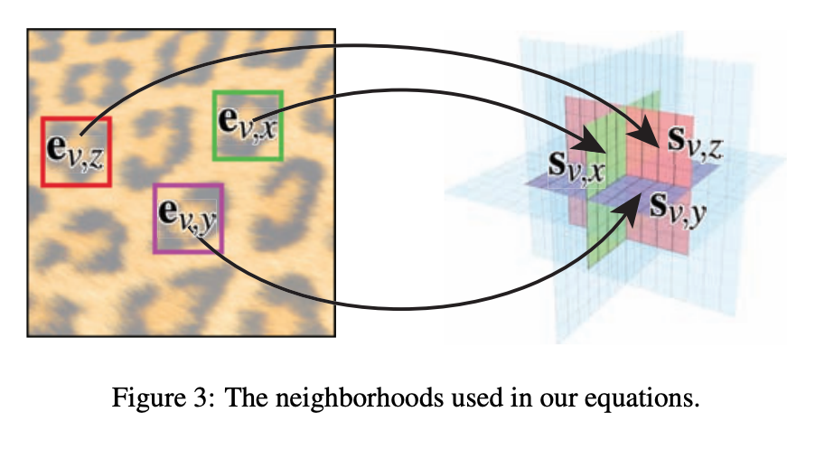

CS184 Final Project: Solid Texture Synthesis
Andrew Kim (adkim@berkeley.edu), 3032735084, github.com/adkim99
Mariana Vazquez (marianavazquezr@berkeley.edu) : 3033107768, github.com/marianavazquezr
Tom Liu (xingweike@berkeley.edu): 3032681823, github.com/Xingweike
Summary
The project that we chose to do was “Solid Texture Synthesis” which is a very useful tool. Our goal for this project was to be able to take a 2D texture exemplar and synthesize a 3D solid texture from it and be able to apply it to multiple objects. We chose this because we thought it was interesting that our implementation would be able to carve out something out of a material given only a 2D texture exemplar. This method allows for more realistic solid textures to be rendered such as wood and stone.
Technical Approach
We based our approach on the paper “Solid Texture Synthesis from 2D Exemplars” (https://www.cs.princeton.edu/courses/archive/fall07/cos597B/papers/kopf-solid-texture.pdf). In this paper, they integrate ideas from non-parametric texture synthesis as well as global histogram matching. In order to complete the solid optimization, we needed to implement two stages: the search phase and the optimization phase. After these two were done, then histogram matching was used.
Overall, the solid optimization process starts by forming a volume where each voxel is chosen from the texture exemplar randomly. Through each iteration, the volume is improved to look more similar to the exemplar. This is done by using an energy function that shows the differences between the volume and the exemplar. The texture energy is minimized iteratively by alternating between the search phase and the optimization phase.
In the search phase, we start with a solid filled in with random pixels from the original texture. We took each axis aligned neighborhood from our voxel and computed the neighborhood in the exemplar texture that minimized the energy function. The energy function that we used was from the paper and it is the sum of the Euclidean norm (L2 norm) between each pixel’s RGB values. This resulted in identifying three neighborhoods from the original texture that matches the three axis-aligned neighborhoods at each voxel in the generated solid. We used PCA to reduce dimensionality while retaining 95% variance to eventually do ANN using query as voxel and exemplar neighborhoods as data points, also strided with stride of 2 for speedup.
In the optimization phase, we take the three neighborhoods that we calculated in the search phase and use them to update each voxel in the solid. The value of each voxel is calculated by finding the weighted average of a collection of texels from the different exemplar neighborhoods found in the search phase.
After the solid optimization is completed, we start the histogram matching process. This is an important step because only implementing the solid optimization algorithm is not enough because this process alone can converge to the wrong local minimum. Histogram matching is used after the process to address this issue. However, we did this a little different than the paper described. The paper used iterative re-weighting during histogram matching, but we just did histogram matching separately. We used histogram matching to try and match global statistics of the exemplar to the solid which reduced noise. We used OpenCV to implement this.
Problems Throughout
One lesson that we learned that helped us a lot for this project was realizing that C++ was faster than Python. In our milestone update, we mentioned that our implementation was very slow. We were testing it with a 128x128 small texture which was creating about 2 million voxels. For each of those voxels, we were comparing its neighborhoods to each neighborhood, something that would take a huge amount of time to complete. One of our main priorities after realizing this was that we needed to figure out how we could speed it up and switching to C++ was certainly a simple change that we made to help our implementation run a little bit faster.
Something that we also learned that helped us tackle some of our problems was how to use some OpenCV libraries. We used some of these throughout our project when implementing various of the phases. These were really helpful to understand and use since they ended up speeding up our implementation and made the algorithm simpler to implement.
Results
|
|
|
|

|
|
References
Solid Texture Synthesis from 2D Exemplars: https://www.cs.princeton.edu/courses/archive/fall07/cos597B/papers/kopf-solid-texture.pdf
Contributions
asdf